Автономный мониторинг строительной площадки
- Единая аналитическая платформа: БПЛА, робототехника, BIM и AI.
- Технический сценарий работы комплекса — от облёта до отчёта о готовности.
Контроль «план / факт»
по цифровой модели

MODEL: DAILY
MODE: AUTO
Архитектура автономного контроля объекта
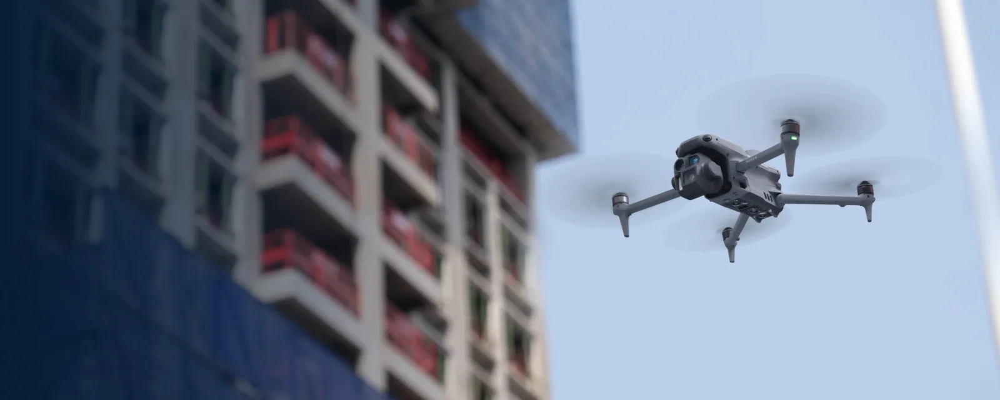
Сбор макро-данных
Облёт БПЛА по заранее сформированным маршрутам.
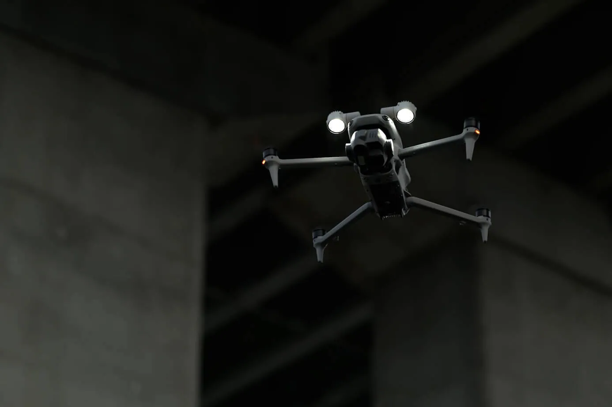
Микро-инспекция
Сканирование закрытых зон и внутренних помещений.
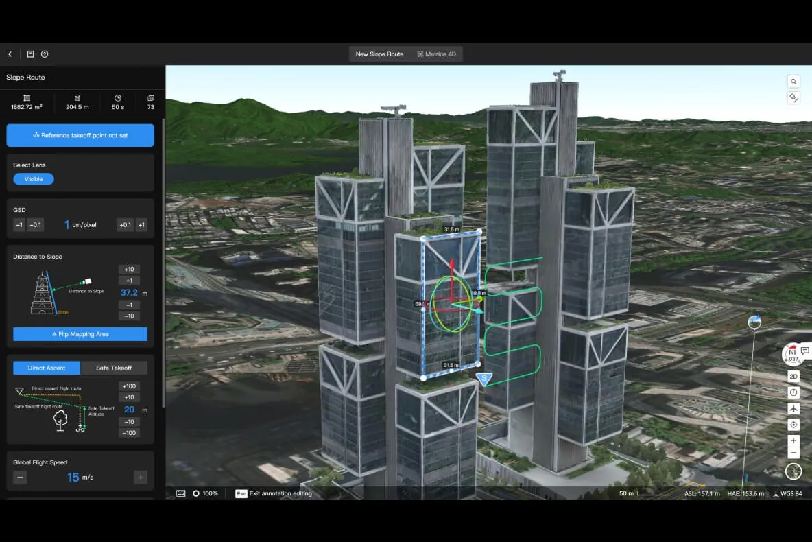
Цифровой двойник
Интеграция полученных данных с BIM и CAD.
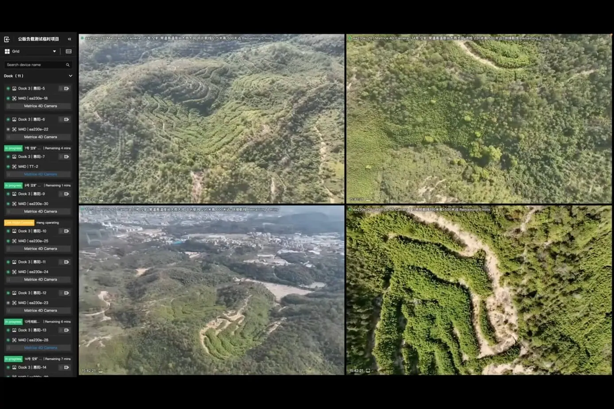
ИИ-аналитика
Распознавание объектов и формирование отчётов.
Воздушное обследование формирует цифровой слепок объекта
Автоматический облёт БПЛА по заранее сформированным маршрутам непрерывно создаёт актуальную копию площадки.
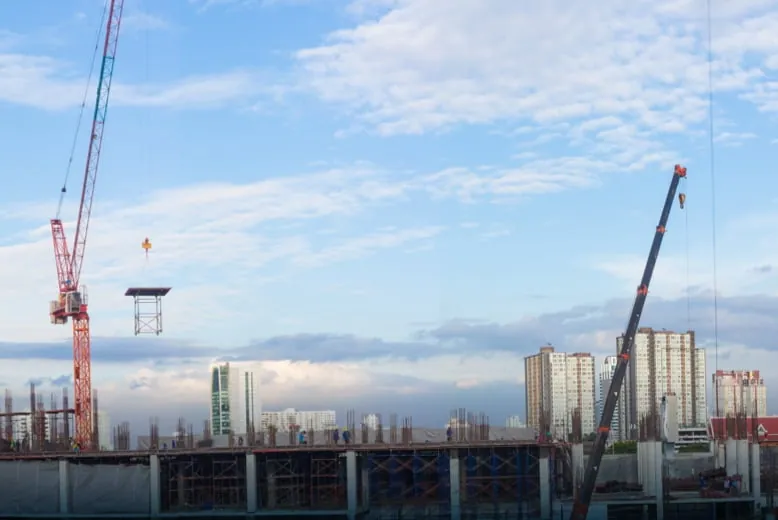
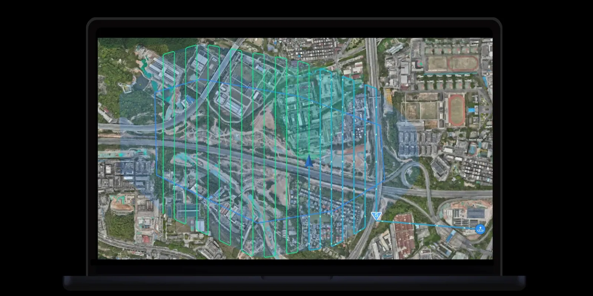
Роботизированная инспекция закрытых зон и скрытых работ
После завершения облёта платформа выполняет глубокое сканирование помещений с использованием LiDAR, HD-камер и алгоритмов автономного позиционирования.
- Контроль качества скрытых работ.
- Учёт строительных материалов на складах.
- Выявление отклонений от чертежей.
- Автономная навигация внутри здания.
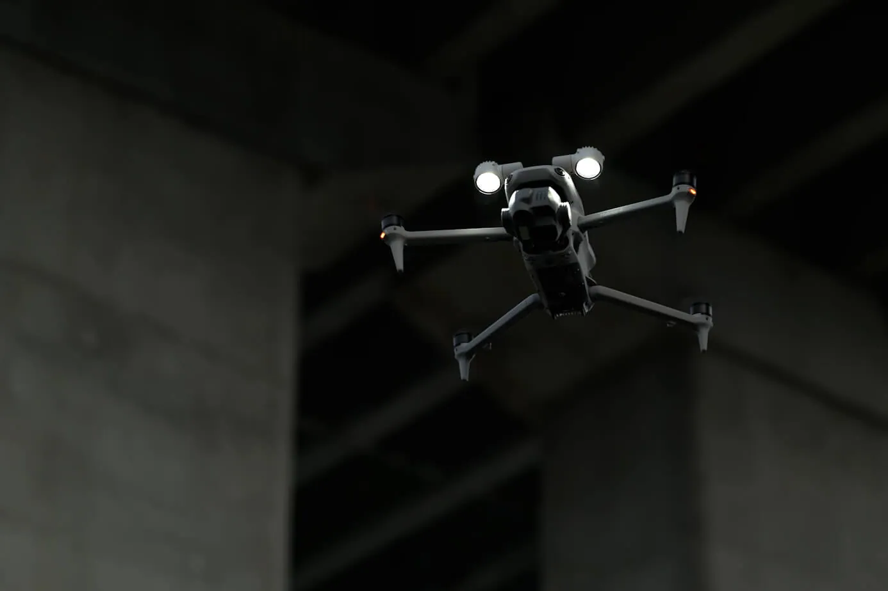
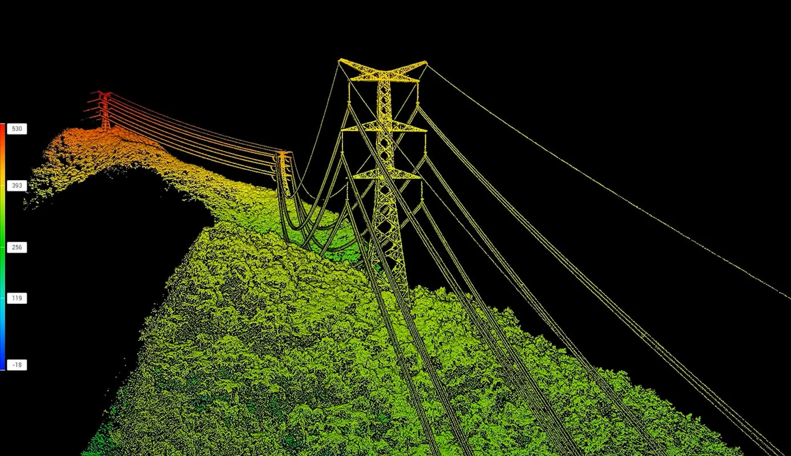
Комплексное покрытие достигается за счёт синергии макро- и микро-сканирования
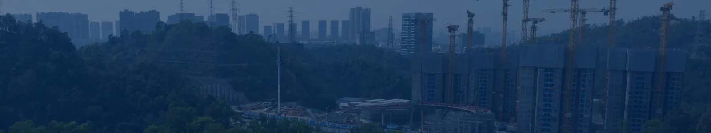
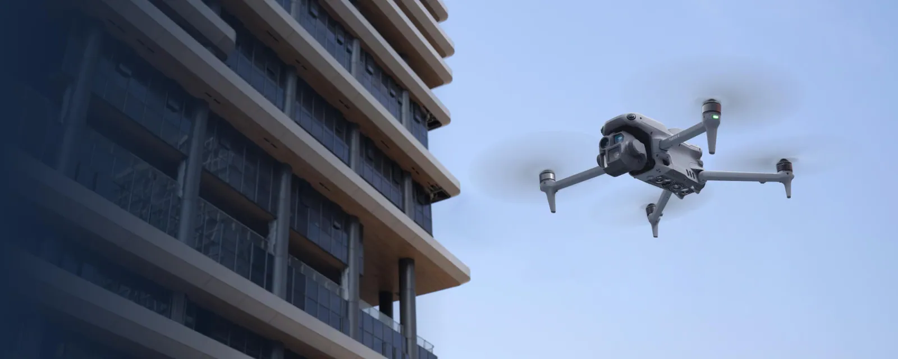
| Параметр | Воздушный сканер (БПЛА) | Наземный сканер (робот) |
|---|---|---|
| Зона покрытия | Внешний контур и генплан | Внутренние помещения и этажи |
| Тип собираемых данных | Ортофотоплан, 3D-каркас | Точечные LiDAR-сканы, HD-фото узлов |
| Ключевая задача | Контроль объёмов и логистики | Контроль качества и дефектовка |
Сопоставление физической реальности с проектной BIM-моделью
Полученные фактические данные автоматически накладываются на CAD-чертежи и план производства работ.
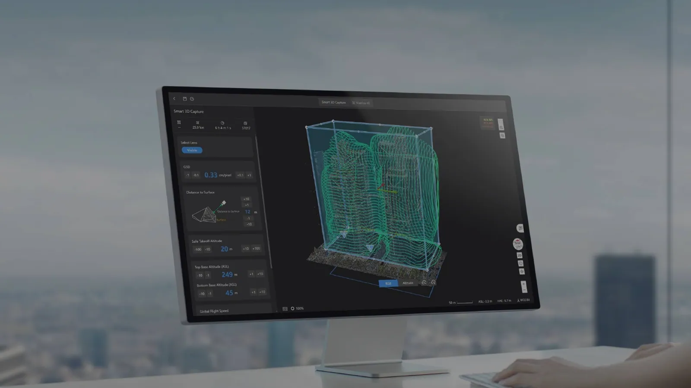
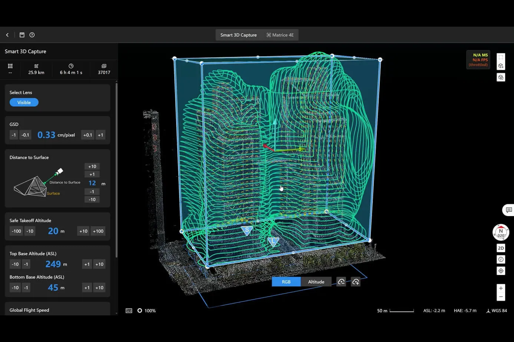
Нейросети классифицируют объекты и выявляют нарушения
Алгоритмы искусственного интеллекта анализируют визуальные данные для автоматического формирования аналитических отчётов.
- Подсчёт объёма залитого бетона.
- Учёт установленных элементов и смонтированных конструкций.
- Фиксация строительных дефектов.
- Выявление нарушений техники безопасности.
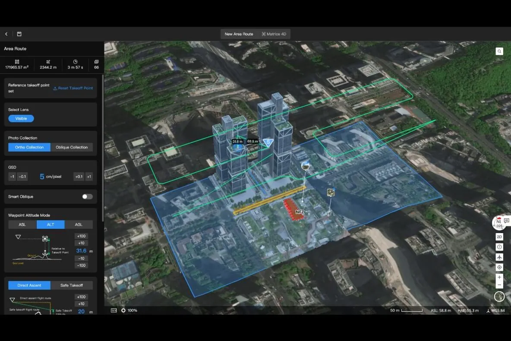
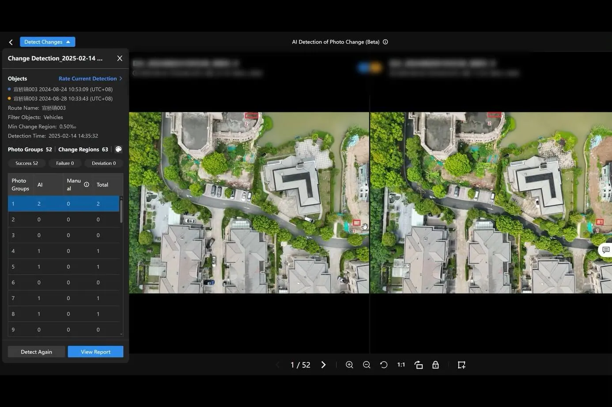
Объёмы и материалы считаются по цифровой модели
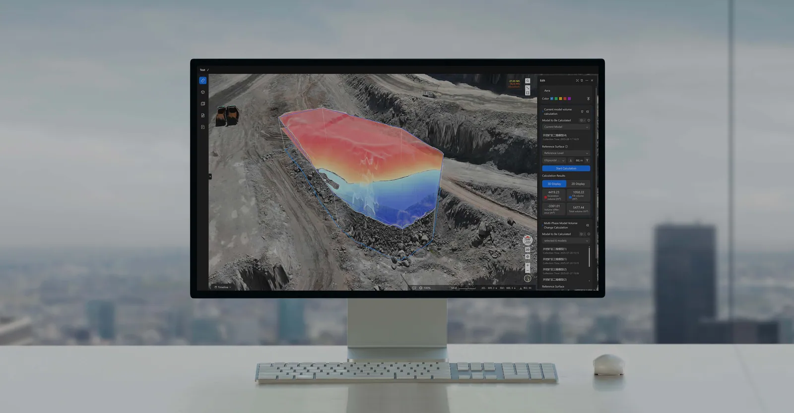
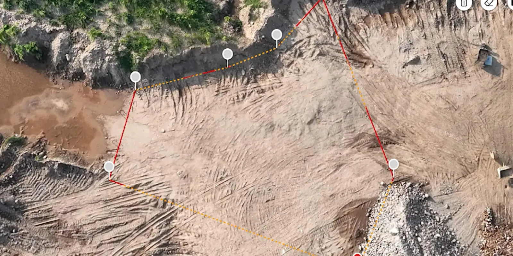
Оперативная сводка: данные реального времени для принятия решений
Автоматизация контроля кардинально снижает риски и издержки
Время на инспекцию объекта. Облёт вместо пеших обходов и ручных замеров.
Обновление цифрового двойника. Ежедневно и без присутствия людей.
Прозрачность. Для заказчика, подрядчика и инвестора.
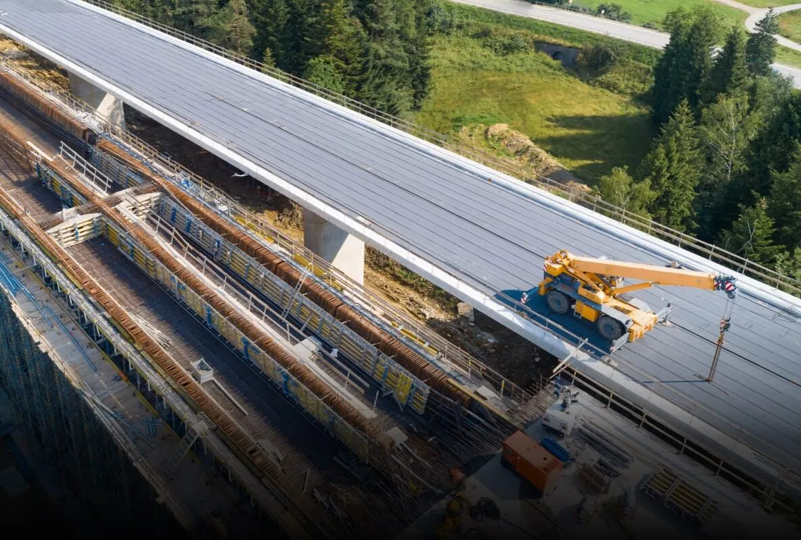